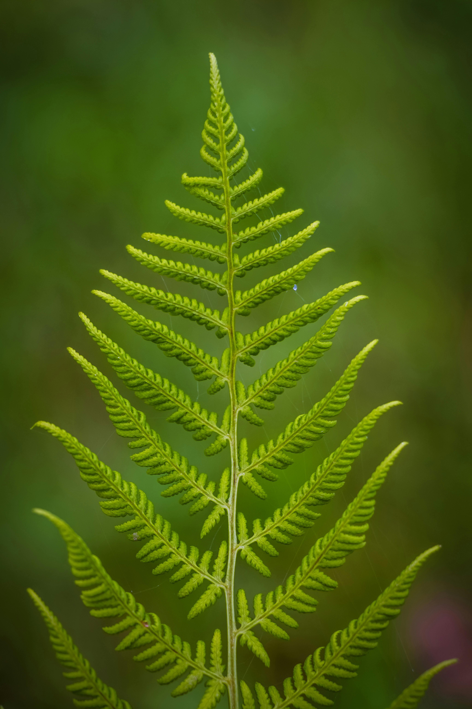
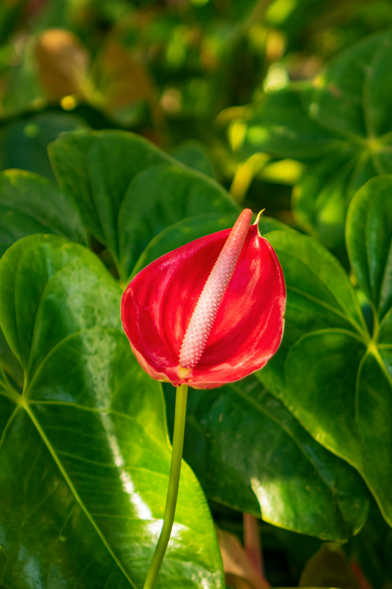
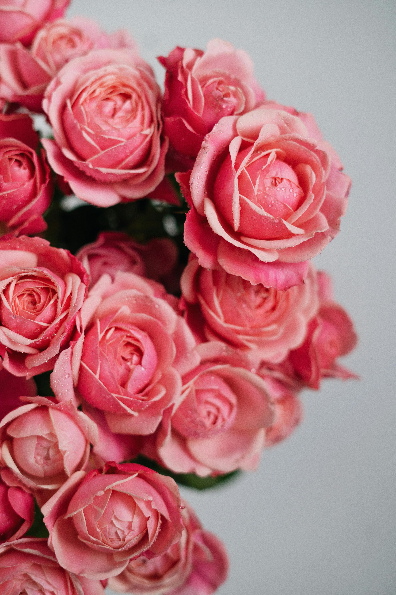
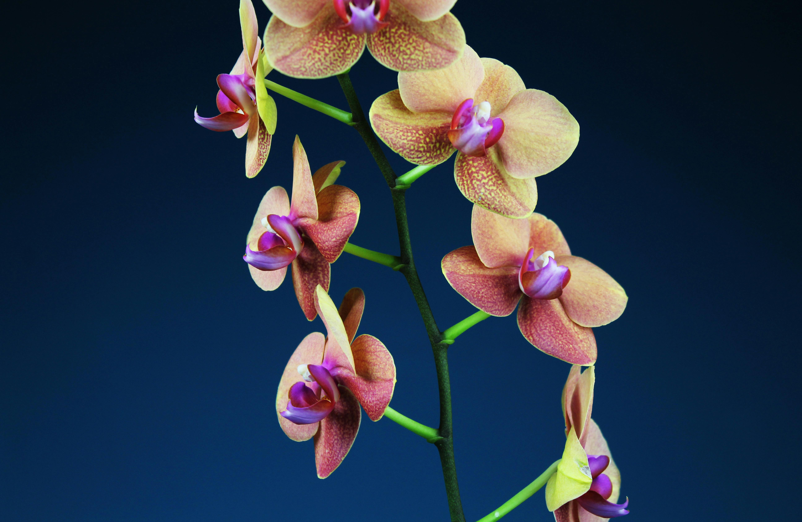

Mais do que
Beleza
Cores
Vida
As plantas ornamentais são cultivadas principalmente pela sua beleza, formas, cores e capacidade de transformar ambientes. Elas embelezam jardins, casas, praças e espaços públicos, trazendo harmonia, frescor e bem-estar. Além da estética, exercem funções ecológicas importantes, como purificação do ar e abrigo para pequenas espécies.
Qual a função das plantas ornamentais?
As plantas ornamentais têm como principal função o embelezamento de ambientes internos e externos. Elas contribuem para a estética de jardins, praças e interiores, além de promoverem sensação de tranquilidade e contato com a natureza. Também ajudam a melhorar a qualidade do ar, controlar a temperatura e reduzir o estresse no dia a dia.
Além da função decorativa, desempenham papéis ecológicos relevantes: atraem polinizadores, auxiliam na umidificação do ar e contribuem para o equilíbrio ambiental. Culturamente, as plantas ornamentais refletem identidade, cultura e tradição, sendo símbolos de harmonia e cuidado com o espaço em que vivemos.

Benefícios
Ecológicos
As plantas ornamentais ajudam na purificação do ar, absorvendo dióxido de carbono e liberando oxigênio. Também contribuem para o controle térmico e acústico dos ambientes, além de favorecer a presença de insetos polinizadores e aves. São aliadas do equilíbrio ambiental, mesmo em espaços urbanos, e fortalecem a biodiversidade local.
Econômicos
O cultivo e a venda de plantas ornamentais movimentam um importante setor econômico. O paisagismo, a jardinagem e o comércio de flores e mudas geram empregos e renda para produtores e comerciantes. Além disso, a presença dessas plantas valoriza imóveis e espaços públicos, tornando-os mais atraentes.
Paisagísticos
As plantas ornamentais são a base do paisagismo, compondo ambientes com beleza, textura e cor. Elas harmonizam espaços, destacam áreas de convivência e criam cenários naturais que estimulam o relaxamento e a contemplação. São amplamente utilizadas em jardins residenciais, praças e projetos urbanos sustentáveis.
Culturais e emocionais
As plantas ornamentais têm grande importância cultural, sendo usadas em rituais, celebrações e tradições ao redor do mundo. Também promovem bem-estar emocional, ajudando a reduzir o estresse e a ansiedade. Cuidar de plantas estimula a paciência, o afeto e a conexão com a natureza, tornando-se um hobby terapêutico.
Sustentabilidade e pesquisa
O cultivo de plantas ornamentais estimula práticas sustentáveis e estudos sobre adaptação climática, irrigação e solo. Pesquisas buscam espécies resistentes e de baixa manutenção, ideais para ambientes urbanos e interiores. Assim, elas unem beleza e consciência ambiental, contribuindo para cidades mais verdes e saudáveis.
Tipos de Plantas Ornamentais
As plantas ornamentais podem ser classificadas de acordo com suas características e funções no paisagismo. Cada tipo tem um papel importante na composição estética e ambiental dos espaços verdes.
- Plantas de folhagem: valorizadas por suas folhas decorativas, como a samambaia e a jiboia.
- Plantas floríferas: conhecidas pelas flores coloridas e perfumadas, como o antúrio, a rosa e o hibisco.
- Plantas trepadeiras: ideais para cobrir muros e pérgolas, como a primavera (buganvília) e a hera.
- Plantas suculentas e cactos: de fácil manutenção, adaptam-se bem a ambientes internos e externos.
- Plantas aquáticas: usadas em lagos e fontes decorativas, como a vitória-régia e o lírio-d’água.
- Plantas arbóreas ornamentais: árvores que embelezam praças e jardins, como o ipê e o flamboyant.
Principais Plantas Ornamentais
Samambaia
Usos: Decoração de interiores e varandas, purificação do ar.
Antúrio
Usos: Ornamentação de ambientes internos, presente em jardins tropicais.
Lírio-da-paz
Usos: Decoração de salas e escritórios, simboliza pureza e tranquilidade.

Rosa
Usos: Jardins, vasos e buquês, símbolo de amor e beleza.
Orquídea
Usos: Ornamentação sofisticada, ambientes internos e eventos.
Espada-de-São-Jorge
Usos: Ambientes internos, purificação do ar, símbolo de proteção.